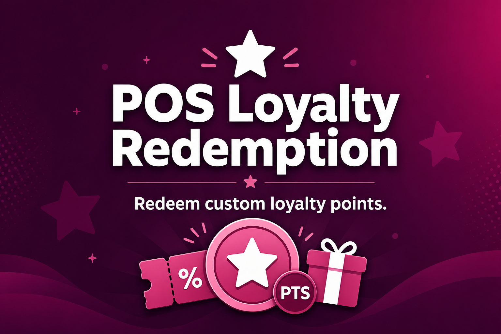

Standard Odoo POS loyalty only supports fixed rewards. This module lets a cashier redeem any custom amount of a customer's loyalty points as a discount on the current order.
Enter the points to redeem, see the discount amount instantly (based on your configured point rate), and apply it as a negative order line.
Available points are fetched from the server when opening Redeem Points, so the cashier always sees the real card balance.
Points are deducted from the loyalty card only after the order is paid, with full loyalty history. Cancelled paid orders restore the points.
Enable per point of sale, choose the loyalty program, redemption product, point-to-currency rate, and minimum redeemable points.
Requires the standard Odoo Loyalty / POS Loyalty apps. Points must already be earned on the customer's loyalty card (from previous paid orders) before they can be redeemed.
Built for Odoo 19 · License LGPL-3